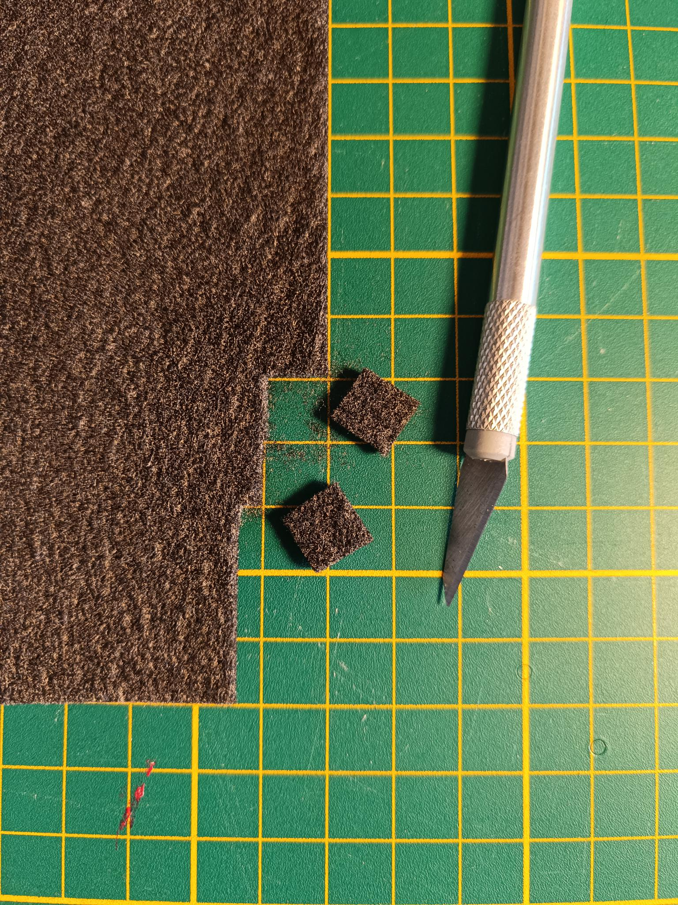

Fabricating components
- 3D printing or milling
- Drilling
- Cutting
Bill of Materials
Parts
- a small plate of 1 mm brass sheet
- 2 2 mm banana connectors with M2 thread and matching nuts
- 4 cm² of conductive felt
- 4 F-25 Luer Lock Adapters
- 2 F-31 Luer Lock Adapters
- 160 cm² of gasket sheet - Dimensions must be at least enough to cut out approx. four 6 cm x 8 cm rectangles, an A4 sheet is enough
- 100 cm² of grafoil
- 2 peristaltic pumps
- some polypropylene filament - This can be substituted if you only plan to run water through the cell for testing things other than the chemistry
- A4 sheet separator sheet
- some stiff filament - PLA works
- 54 cm of tubing
Tools
- 1 2D metal cutting tool - Mill, drill, router, laser cutter for sheet metal
- 1 FDM printer
- 1 gasket cutter machine - Vinyl/laser cutter or hand tools
- 1 utility knife
You will need a FDM printer and at least two types of filament, stiff filament and polypropylene filament.
Step 1: Print one jig and one cell assembly tool
Print the jig and cell assembly tool in PLA or whatever material you can print easily. It does not have to be chemically resistant or that strong, so you can use a low infill.
Step 2: Print Arduino Uno case parts
These parts can be done in PLA or similar filaments at low infill. They mount onto the back of the jig.
Note
3D Printed Case for Arduino Uno, Leonardo by ZygmuntW is licensed under the Creative Commons - Attribution - Share Alike license.
Step 3: Print two endplates
Print one of each endplate: endplate with holes and endplate with pins. They must be stiff, so print them with at least 70% infill in PLA or PETG. Try to avoid warping as they bottom need to be flat to seal the cell well.
Step 4: Print wetted cell components in polypropylene
Print the combined reservoir and two flow frames in polypropylene.
It's important these don't leak. Leak-tight parts in FDM require trial-and-error, we have found good conditions for printing to be at 100% infill, 7 perimeters/wall lines, 1.05 flowrate multiplier (5% overextrusion), and a line width of 0.45 mm (for a 0.4 mm nozzle).
Help Block
It's important these don't leak. Leak-tight parts in FDM require trial-and-error, we have found good conditions for printing to be at 100% infill, 7 perimeters/wall lines, 1.05 flowrate multiplier (5% overextrusion), and a line width of 0.45 mm (for a 0.4 mm nozzle).
Warning
The total combined thickess of the flow frames and (compressed) gaskets is important! The compression is fixed by the combined total thickness of the flow frame and two gaskets.
Step 5: Cut gaskets
Note:
Cutting the gaskets is most easily done with a vinyl cutter machine or laser cutter, but can also be done manually with a steady hand, utility blade, and appropriately sized punches.
Using a gasket cutter machine, download the gasket file and cut a sheet of gasket material to make the following four gaskets:
Step 6: Cut porous electrodes
Cut two conductive graphite felt electrodes to fit inside the flow frames using scissors or a utility knife. Our current standard test uses 2 cm² geometric area cells, so cut two squares each with a side length of 14.1 mm from a larger piece of conductive felt.

Step 7: Cut separator membrane
Cut separator sheet into a 2.7 cm x 2.7 cm square (depending on your material, you may need multiple layers to stack to sufficient thickness).
Step 8: Cut grafoil current collectors
Using a precut gasket as a guide, cut/punch grafoil into the following shape to make grafoil current collectors. An appropriate gasket cutter machine can also be used but note that a CO₂ laser cannot cut graphite.
Step 9: Cut brass current collectors
Using a 2D metal cutting tool, machine 1 mm brass sheet according to the below drawing to make two brass current collectors. Alternatively the .step file can be used with 2D fabrication services to order the cut parts.
Step 10: Ensure correct tubing type is in peristaltic pumps
If you plan to test zinc-iodide chemistries, you need PTFE-lined peristaltic pump tubing loaded in your peristaltic pumps
Warning
Your pump may not come with PTFE-lined tubing installed, you should verify what type is installed before running your first experiment
Step 11: Cut tubing
Cut tubing into the following lengths:
- 4x 3.5 cm pieces (flow frame connections to Luer Lock fittings)
- 2x 4 cm (pump to flow frame Luer Lock fitting)
- 2x 7 cm pieces (pump outlet to reservoir inlet)
- 2x 9 cm pieces (reservoir outlet to flow frame Luer Lock fitting)
Help Block
The tubing-printed barb connections are difficult to attach, the fit is very tight. Softening the ends of the tubing in hot water before pushing them on can help immensely.
Step 12: Attach tubing to the barbed fittings
Take the two flow frames and attach one piece of 3.5 cm tubing to each barb. It should be a tight fit. You will only have to do this once.
Then, insert F-25 Luer Lock Adapters Into the ends of the tubing.
Step 13: Attach tubing and two adapters to the reservoirs
Insert two F-31 Luer Lock Adapters into the ends of the 9 cm tubing.
Step 14: Attach banana connectors to the outer current collectors
Take two 2 mm banana connectors with M2 thread and matching nuts and fasten them to the outer current collectors as shown above.
Warning
Be sure to make mirrored left- and right-handed versions of the current collectors with the connectors installed. In the assembled cells, the tabs must be opposite each other but the elecrical connections are done from the same side.